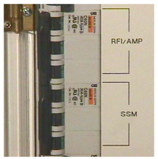
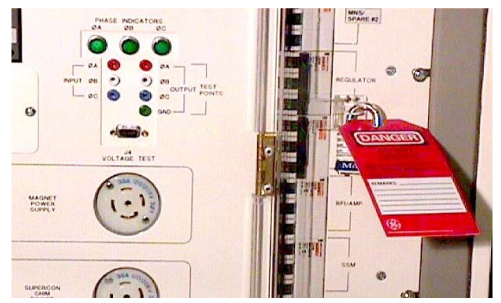
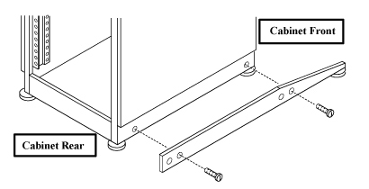
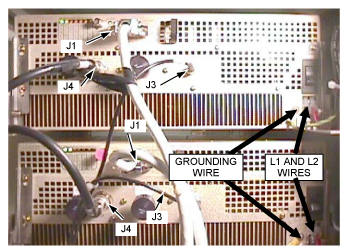
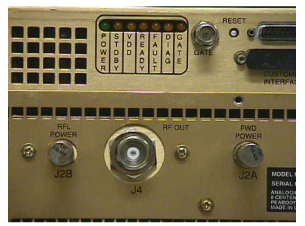
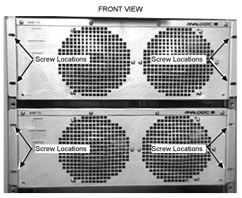
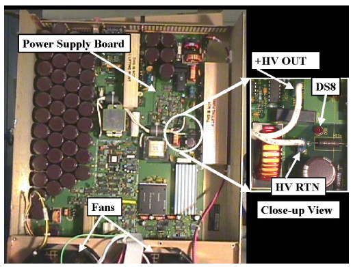
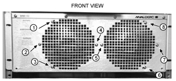
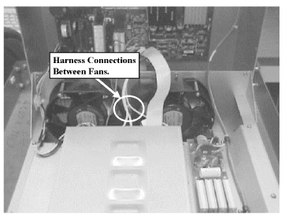

Operating Documentation
Direction 5133315-3, Rev# 14
Signa EXCITE HD 1.5T Service Methods
Module Version 1.0, Version Date 5/3/07
Operating Documentation |
| Required Persons | Preliminary Reqs | Procedure | Finalization |
|---|---|---|---|
| 1 | Not Applicable | Not Applicable | Not Applicable |
| Item | Qty | Effectivity | Part# | Manufacturer | |
|---|---|---|---|---|---|
| Universal Lift Hoist Kit – Used to remove amp from cabinet. | 1 | Replacing RF Amplifier ONLY | 46-317266G3, G4, G5 or G6 | - | |
| Phillips Screwdriver (30cm or longer) | 1 | - | - | - | |
| Item | Qty | Effectivity | Part# | Manufacturer | |
|---|---|---|---|---|---|
| RF Amplifier with Case | 1 | - | 2224562-5 | - | |
| Fan | 1 | - | 2262478 | - | |
| ||||
| possible personal injury! | ||||
| avoid serious injury or death by electrocution. | ||||
| Remove power from the srf cabinet before attempting to remove the rf amplifier. verify that the rfi/amp and ssm breakers on the front of the pdu are off. lock and tag out the plexi glass cover on the front of the pdu |
| ||||
| SHOCK HAZARD! AVOID SERIOUS INJURY BY ELECTROCUTION. | ||||
| THE CAPACITOR BANK IN THE AMPLIFIER MAY RETAIN CHARGE LONG AFTER THE INCOMING 208V~ L1 AND L2 LINES THAT CONNECT AT THE REAR OF THE AMPLIFIER HAVE BEEN DISCONNECTED. | ||||
| BEFORE REPLACING ANY COMPONENTS IN THE AMPLIFIER, MEASURE THE CAPACITOR VOLTAGE AS DESCRIBED IN THIS SECTION TO VERIFY THAT THE VOLTAGE IS BELOW 10 VDC. DO NOT ASSUME THAT THE BLEEDER RESISTOR HAS DISCHARGED THE CAPACITOR BANK BASED ON THE STATE OF THE INDICATOR LEDS. ALWAYS MEASURE TO VERIFY |
| ||||
| Cabinet tip hazard! | ||||
| possible personal injury | ||||
| confirm that the aluminum anti-tip legs stored in the rear of the cabinet are installed on either side of the base of the cabinet before attempting to remove an rf amplifier |
| ||||
| possible personal injury! | ||||
| avoid serious injury or death by electrocution. | ||||
| Remove power from the srf cabinet before attempting to remove the rf amplifier. verify that the rfi/amp and ssm breakers on the front of the pdu are off. lock and tag out the plexi glass cover on the front of the pdu |
Remove the cover from the front of the ACGD cabinet
Open Plexiglass door over the front of the PDU breakers and switch off the RFI/AMP and SSM breakers. See Illustration 1
Illustration 1: Breaker Identification

Close the plexiglass door and lock out and tag it out. See Illustration 2.
Illustration 2: Lockout and Tagout of Breakers

Remove the front cover from the SRF Cabinet
Verify all LEDs are OFF (not illuminated) on front of SSM and RFI. Verify all LEDs are OFF (not illuminated) at the rear of the RF Amplifier Power Module
Using an AC voltmeter (DVM), measure the input power leads on the rear of one of the RF Amplifier Modules from the rear (right side) of the SRF Cabinet
Measure between L1 and L2
Verify that voltmeter measures 0 VAC
This section applies to Signa 1.5T systems installed with an SRF Cabinet and explains the procedures for the replacement of the RF amplifiers and the fans in the RF amplifiers
| ||||
| possible personal injury! | ||||
| avoid serious injury or death by electrocution. | ||||
| Remove power from the srf cabinet before attempting to remove the rf amplifier. verify that the rfi/amp and ssm breakers on the front of the pdu are off. lock and tag out the plexi glass cover on the front of the pdu |
Perform SRF Cabinet Power Lockout and Tagout.
| ||||
| Cabinet tip hazard! | ||||
| possible personal injury. | ||||
| confirm that the aluminum anti-tip legs stored in the rear of the cabinet are installed on either side of the base of the cabinet before attempting to remove an rf amplifier. |
Using the screws included with the anti-tip legs, secure the aluminum anti-tip legs to the threaded holes on each side of the base of the SRF Cabinet. See Illustration 3.
Illustration 3: Installing Anti-Tip Legs on Sides of Cabinet

Disconnect wires from L1 and L2 of AC connectors and the grounding wire on rear of RF AMP. See Illustration 4.
Illustration 4: Connector Locations

Remove the J1, J3, and J4 connections on rear of RF Amplifiers. See Illustration 4.
Remove the two 50 ohm terminators (or dummy loads as seen in Illustration 4) from BNC connectors J2A (labeled FWD POWER) and J2B (labeled RFL POWER) on the rear of the amplifier. See Illustration 5.
Illustration 5: J2B and J2A Connectors with Terminators on Rear of Amplifier

Place these terminators (or dummy loads) into an empty cut out in the padding inside the FRU container in which the amplifier will be returned. This will prevent damage to the terminators and to the J2A and J2B BNC connectors during shipment. Do not return the amplifier with the terminators (or dummy loads) connected as shown in Illustration 4 and Illustration 5.
Remove the four screws securing the amplifier to the cabinet. See Illustration 6.
Illustration 6: Screw Locations on Cabinet

Refer toRefer to Universal Lift Kit Assembly for 1.5T RF/PDU and SRF Cabinets procedure to remove amplifier from cabinet.
Refer toRefer to Universal Lift Kit Assembly for 1.5T RF/PDU and SRF Cabinets procedure and install the amplifier into the cabinet.
Insert four screws into front of amplifier to secure to cabinet.
Reconnect cables J1, J3, and J4 connections on rear of RF Amplifiers.
Reconnect the 50 ohm terminators (included in the plastic bag shipped with the amplifier) to BNC connectors J2A and J2B on the rear of the amplifier. See Illustration 5.
Connect the L1 and L2 AC power wires to the AC power connectors on the rear of the amplifier.
Connect the grounding wire to the lug on the rear of the RF amplifier.
Confirm that the black power rocker switch above the AC power connectors on the rear of the amplifier is in the UP/ON position.
Close the SRF rear cabinet door.
Remove lock and tag from the plexi glass cover on the front of the PDU cabinet and put the RFI/AMP and the SSM breakers in the ON position.
Confirm that LEDs are illuminated on the front of the RFI and SSM and confirm that the fans in the RF amplifiers are rotating.
If an amplifier was replaced then perform the RFI calibration procedure described in 1.5T SRF Max Power RF Out Setup and Calibration.
| ||||
| SHOCK HAZARD! AVOID SERIOUS INJURY BY ELECTROCUTION. | ||||
| THE CAPACITOR BANK IN THE AMPLIFIER MAY RETAIN CHARGE LONG AFTER THE INCOMING 208V~ L1 AND L2 LINES THAT CONNECT AT THE REAR OF THE AMPLIFIER HAVE BEEN DISCONNECTED. | ||||
| BEFORE REPLACING ANY COMPONENTS IN THE AMPLIFIER, MEASURE THE CAPACITOR VOLTAGE AS DESCRIBED IN THIS SECTION TO VERIFY THAT THE VOLTAGE IS BELOW 10 VDC. DO NOT ASSUME THAT THE BLEEDER RESISTOR HAS DISCHARGED THE CAPACITOR BANK BASED ON THE STATE OF THE INDICATOR LEDS. ALWAYS MEASURE TO VERIFY |
Remove RF Amplifier module from cabinet. Refer to RF Amplifier Power Module Removal.
With unit resting on a flat surface, remove 16 screws from the RF AMP.
Four screws along front top of RF Amplifier
Four screws along rear top of RF Amplifier
Four screws along each side of the RF Amplifier
Lift RF Amplifier top cover assembly by the handle on the rear of the amplifier.
Refer to Illustration 7. Locate the red LED DS8 that is on the power supply board mounted underneath the top cover. DS8 provides a visual indication of whether there is voltage on the +HV OUT line or not. During normal operation there is 141 VDC present between the +HV OUT and HV RTN lines.
Illustration 7: Power Supply Board and Close up of LED DS8 and +HV and HV RTN Lines

Determine whether LED DS8 is illuminated or not.
If DS8 is illuminated then wait the time necessary for it to eventually go dark. This usually takes about 8 minutes.
After DS8 has gone dark then use a multi meter to measure the voltage between the exposed portions of the spade connectors of the +HV and HV RTN lines. Do not remove the wires from the spade connectors. Leave the wires connected during the measurement.
If the voltage is less than 10 VDC then proceed to Step 6.
If the voltage is still greater than 10 VDC then wait the time necessary for it to decrease below 10 VDC before proceeding to Step 6.
If DS8 is not illuminated then use a multi meter to measure the voltage between the exposed portions of the spade connectors of the +HV and HV RTN lines. Do not remove the wires from the spade connectors. Leave the wires connected during the measurement.
If the voltage is less than 10 VDC then proceed to Step 6.
If the voltage is still greater than 10 VDC then wait the time necessary for it to decrease below 10 VDC before proceeding to Step 6.
Remove the eight screws holding the fans in place. See Illustration 8.
Illustration 8: Screw Locations for Fans

Lifting one fan at a time, remove fan harness connection from the fans. Do not pull on wires, grasp by connector. See Illustration 9.
Illustration 9: Fan Harness Location

Follow the steps below to install the cooling fans:
Install fan harness to connections on fans.
Install 2 screws finger tight in each fan, making sure not to crimp wires between the fan and chassis.
Close the RF Amplifier top cover assembly and install remaining 6 screws into the fans.
Open cover and check again to insure fan harness is not crimped. Close cover and install remaining 16 screws in RF Amplifier top cover assembly.
This completes the procedure for installing cooling fans. Proceed to Amplifier Installation- Amplifier Installation.
After replacing an RF Amplifier module, perform the following calibration, 1.5T SRF Max Power RF Out Setup and Calibration.
Next perform the SRF Power Monitor Checkscalibration procedure.
Finally, perform a test scan to verify the system is functioning properly.